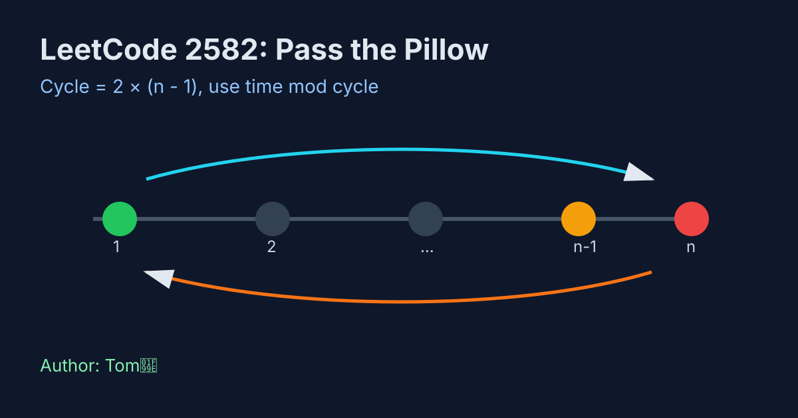

LeetCode 2582: Pass the Pillow (Round-Trip Cycle Math)
LeetCode 2582MathSimulationToday we solve LeetCode 2582 - Pass the Pillow.
Source: https://leetcode.com/problems/pass-the-pillow/

English
Problem Summary
There are n people in a line numbered 1 to n. Starting from person 1, a pillow is passed every second to the next person; direction flips at both ends. Return who holds the pillow after exactly time seconds.
Key Insight
The movement repeats in a fixed cycle of length 2*(n-1): forward from 1 to n, then backward from n to 1. So we only need time mod cycle, not full simulation for huge time.
Brute Force and Limitations
A direct simulation updates current index and direction each second. It is easy but costs O(time), which is unnecessary when time can be large.
Optimal Algorithm Steps
1) Compute cycle = 2*(n-1).
2) Let r = time % cycle.
3) If r ≤ n-1, we are on forward leg, answer = 1 + r.
4) Otherwise we are on backward leg, answer = n - (r-(n-1)).
Complexity Analysis
Time: O(1).
Space: O(1).
Common Pitfalls
- Forgetting full round-trip cycle length is 2*(n-1), not n.
- Off-by-one when converting remainder to person index.
- Special case n=2 still works with the same formula.
Reference Implementations (Java / Go / C++ / Python / JavaScript)
class Solution {
public int passThePillow(int n, int time) {
int cycle = 2 * (n - 1);
int r = time % cycle;
if (r <= n - 1) {
return 1 + r;
}
return n - (r - (n - 1));
}
}func passThePillow(n int, time int) int {
cycle := 2 * (n - 1)
r := time % cycle
if r <= n-1 {
return 1 + r
}
return n - (r - (n - 1))
}class Solution {
public:
int passThePillow(int n, int time) {
int cycle = 2 * (n - 1);
int r = time % cycle;
if (r <= n - 1) return 1 + r;
return n - (r - (n - 1));
}
};class Solution:
def passThePillow(self, n: int, time: int) -> int:
cycle = 2 * (n - 1)
r = time % cycle
if r <= n - 1:
return 1 + r
return n - (r - (n - 1))var passThePillow = function(n, time) {
const cycle = 2 * (n - 1);
const r = time % cycle;
if (r <= n - 1) {
return 1 + r;
}
return n - (r - (n - 1));
};中文
题目概述
有 n 个人按 1..n 排成一行，初始枕头在 1 号手里。每秒传给相邻的人，到两端时反向。求经过 time 秒后谁拿着枕头。
核心思路
传递轨迹是固定往返周期：从 1 到 n，再从 n 回到 1，周期长度为 2*(n-1)。因此只需看 time % cycle。
暴力解法与不足
可按秒模拟当前位置与方向，逻辑直观，但时间复杂度是 O(time)，当 time 很大时不必要。
最优算法步骤
1）计算 cycle = 2*(n-1)。
2）计算 r = time % cycle。
3）若 r ≤ n-1，在正向阶段，答案是 1+r。
4）否则在反向阶段，答案是 n-(r-(n-1))。
复杂度分析
时间复杂度：O(1)。
空间复杂度：O(1)。
常见陷阱
- 把周期误写成 n。
- 余数映射回编号时出现 off-by-one。
- 忽略边界点（到 n 后立刻反向）。
多语言参考实现（Java / Go / C++ / Python / JavaScript）
class Solution {
public int passThePillow(int n, int time) {
int cycle = 2 * (n - 1);
int r = time % cycle;
if (r <= n - 1) {
return 1 + r;
}
return n - (r - (n - 1));
}
}func passThePillow(n int, time int) int {
cycle := 2 * (n - 1)
r := time % cycle
if r <= n-1 {
return 1 + r
}
return n - (r - (n - 1))
}class Solution {
public:
int passThePillow(int n, int time) {
int cycle = 2 * (n - 1);
int r = time % cycle;
if (r <= n - 1) return 1 + r;
return n - (r - (n - 1));
}
};class Solution:
def passThePillow(self, n: int, time: int) -> int:
cycle = 2 * (n - 1)
r = time % cycle
if r <= n - 1:
return 1 + r
return n - (r - (n - 1))var passThePillow = function(n, time) {
const cycle = 2 * (n - 1);
const r = time % cycle;
if (r <= n - 1) {
return 1 + r;
}
return n - (r - (n - 1));
};
Comments